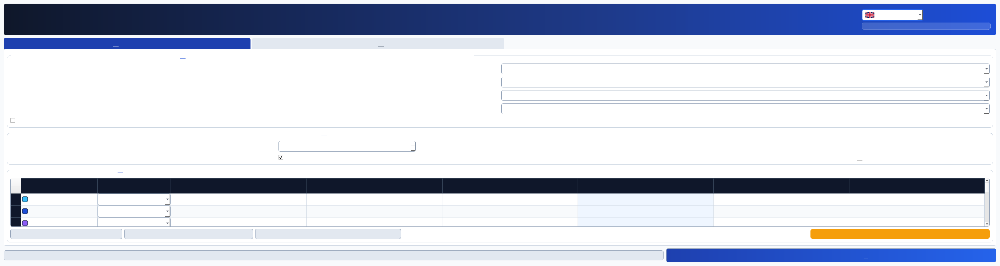

1. Mathematical Formulation & Spatial Graph Engine
1.1 Prepared Network Graph Construction & $O(1)$ Spatial Snapping (mpyy_engine.py :: FastRoadGraph)
To eliminate GUI thread freezing during multi-facility network evaluations, FastRoadGraph constructs a compressed undirected weighted graph $G = (V, E, w)$ in the target metric CRS (EPSG:5253). Polylines are decimated so intermediate vertices are only materialized when accumulated segment length $\ell_{\text{acc}} \ge 15.0\text{ m}$ or at line endpoints. Vertex merging within tolerance $\tau = 2.5\text{ m}$ uses a spatial hash grid $(g_x, g_y) = (\lfloor x/\tau \rceil, \lfloor y/\tau \rceil)$, and arbitrary query points $p \in \mathbb{R}^2$ snap to their nearest graph node via QgsSpatialIndex.nearestNeighbor plus a coordinate memoization cache:
1.2 Multi-Source Dijkstra Network Service Catchments (FastRoadGraph.multi_source_dijkstra)
Extending Dijkstra (1959) (DOI: 10.1007/BF01386390) to simultaneously seeded facility centroids $\mathcal{F}_k = \{f_1, \dots, f_m\}$ of category $k$, the priority queue is initialized with all snapped facility nodes $(d_{\text{snap}}(f_j), v^*(f_j))$ and expands shortest-path distances up to $D_{\max}$:
For any residential block centroid $r_i$ with area $A_i$ and area-weighted population $P_i = P_{\text{total}} \frac{A_i}{\sum_j A_j}$, the total road-network travel distance to the nearest facility of type $k$ is:
This dual formulation explicitly isolates Barrier-Severed Blocks (BIRD OK / NO ROAD ACCESS) where $d_{\text{euclid}}(r_i, k) \le R_{\text{euclid},k}$ but $d_{\text{road}}(r_i, k) > R_{\text{net},k}$ due to missing street connectivity or physical barriers.
1.3 Two-Dimension Deficit & Graph-Median Allocation Scoring (mpyy_dialog.py :: run_full_analysis)
Combining supply-to-demand capacity modeling from Luo & Wang (2003) (DOI: 10.1068/b29120) with graph-median location optimization from Hakimi (1964) (DOI: 10.1287/opre.12.3.450), each candidate vacant parcel $v$ with area $A_v \ge A_{\min,k}$ is evaluated by computing the unserved residential population $P_{\text{newly\_covered}}(v, k)$ reachable within road distance $R_{\text{net},k}$ from $v$, combined with remaining city-wide capacity deficit $D_{\text{pop}}(k) = \max(P_{\text{unserved},k},\, P_{\text{total}} - C_{\text{existing},k})$:
Surplus Facility Safeguard: When all facility deficits are satisfied ($\sum_k D_{\text{pop}}(k) \le 500$ persons), the engine prevents redundant institutional clustering and assigns vacant urban parcels ($A_v \ge 1200\text{ m}^2$) to Residential Development Area (or Park & Green Space).
1.4 12-Step Recursive Binary Polygon Subdivision (mpyy_engine.py :: split_polygon_by_ratios)
When a vacant urban block $P$ exceeds the minimum parcel requirement $A_{\min,k}$ of its primary assigned facility $k_1$ by at least the minimum park threshold ($A_{\text{rem}} = A_P - A_{\text{target},k_1} \ge A_{\min,\text{park}}$), the polygon is partitioned into 2 or 3 exact sub-parcels $\{P_1, P_2[, P_3]\}$ along the dominant bounding-box axis ($\Delta x \ge \Delta y \implies x\text{-cut}$, else $y\text{-cut}$). For each cut fraction $\alpha = \frac{r_i}{\sum_{j \ge i} r_j}$, a 12-iteration binary search locates the cutting line $c^* \in [c_{\min}, c_{\max}]$ satisfying:
2. MPYY Annex-2 Official Urban Facility Standards Table
| Facility ID | English Label (Default UI) | Turkish Label (MPYY EK-2) | Euclidean / Road Radius | Per-Capita Norm | Min Parcel Area ($A_{\min}$) | Split Cap ($A_{\max}$) | Unit Capacity |
|---|---|---|---|---|---|---|---|
ilkokul |
Primary School (5000-8000 m²) | İlkokul (EK-2: 5000-8000 m²) | 500 m / 500 m | 2.00 m²/cap | 5,000 m² | 8,000 m² | 2,500 pers |
ortaokul |
Middle School (6000-10000 m²) | Ortaokul (EK-2: 6000-10000 m²) | 1,000 m / 1,000 m | 2.00 m²/cap | 6,000 m² | 10,000 m² | 3,500 pers |
lise |
Day High School (6000-10000 m²) | Gündüzlü Lise (EK-2: 6000-10000 m²) | 2,500 m / 2,500 m | 2.00 m²/cap | 6,000 m² | 10,000 m² | 5,000 pers |
asm |
Family Health Center (750-2000 m²) | Aile Sağlığı Merkezi (EK-2: 750-2000 m²) | 500 m / 500 m | 0.75 m²/cap | 750 m² | 2,000 m² | 5,000 pers |
hastane |
State Hospital (1.5 m²/cap) | Devlet Hastanesi (EK-2: 1.5 m²/kişi) | 2,500 m / 2,500 m | 1.50 m²/cap | 5,000 m² | 15,000 m² | 15,000 pers |
ibadet |
Place of Worship (2500 m²) | Orta İbadet Yeri (EK-2: 2500 m²) | 400 m / 400 m | 0.50 m²/cap | 2,500 m² | 5,000 m² | 3,500 pers |
park |
Park & Playground (10 m³/cap) | Çocuk Bahçesi & Park (EK-2: 10 m³/kişi) | 500 m / 500 m | 10.00 m²/cap | 1,000 m² | 25,000 m² | 3,000 pers |
konut |
Residential Development Area | Gelişme Konut Alanı (Rezerv Yapı) | 1,000 m / 1,000 m | 0.00 m²/cap | 1,000 m² | 30,000 m² | 4,000 pers |
sosyal |
Social & Cultural Facility | Sosyal ve Kültürel Tesis (EK-2) | 1,000 m / 1,000 m | 1.25 m²/cap | 1,500 m² | 6,000 m² | 4,000 pers |
3. Step-by-Step GUI Workflow (Real PyQGIS Captures)

MPYYDonatiDialog, with 4-language switcher (EN, TR, ZH, ES) and sample polygon generator in EPSG:5253.
Bird OK / Road FAIL), newly allocated compact facility parcels, and per-parcel subdivision narratives.
4. Verified Academic References
| Citation | Title & Journal | Verified DOI | Role in Plugin |
|---|---|---|---|
| Dijkstra, E. W. (1959) | A note on two problems in connexion with graphs, Numerische Mathematik, 1(1), 269–271. | 10.1007/BF01386390 | Shortest-path road-network service catchment engine (FastRoadGraph.multi_source_dijkstra) |
| Luo, W. & Wang, F. (2003) | Measures of Spatial Accessibility to Health Care in a GIS Environment: Synthesis and a Case Study in the Chicago Region, Environment and Planning B, 30(6), 865–884. | 10.1068/b29120 | Two-step supply capacity vs. population demand deficit synthesis |
| Hakimi, S. L. (1964) | Optimum Locations of Switching Centers and the Absolute Centers and Medians of a Graph, Operations Research, 12(3), 450–459. | 10.1287/opre.12.3.450 | Graph-median facility location & unserved residential node coverage maximization |